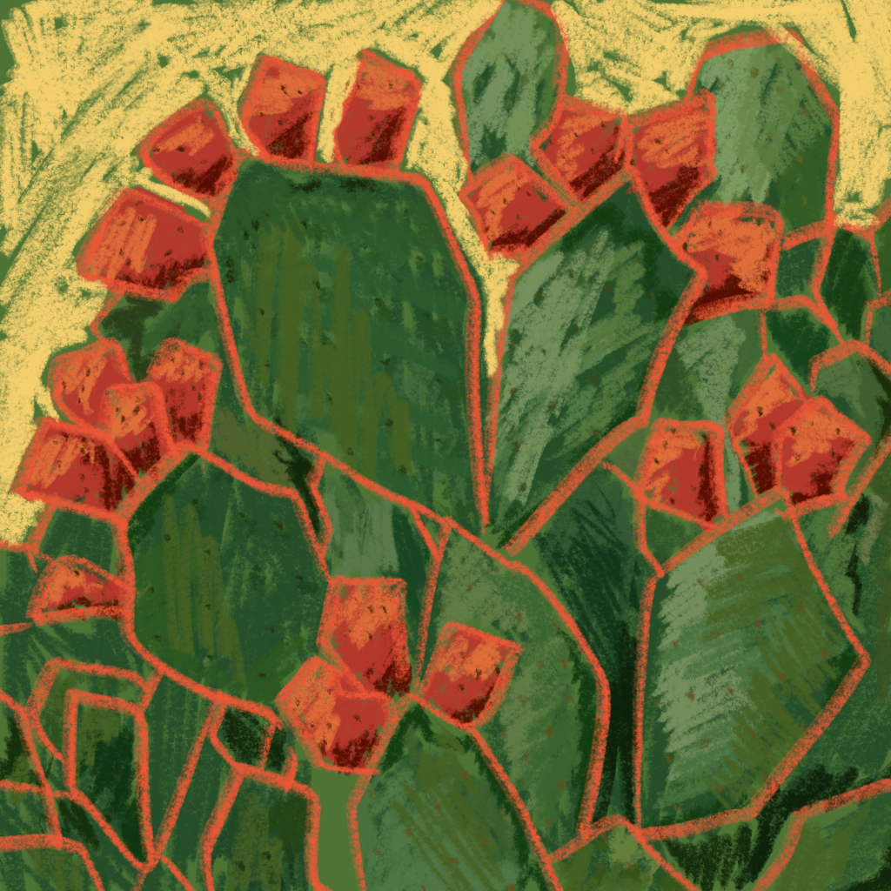
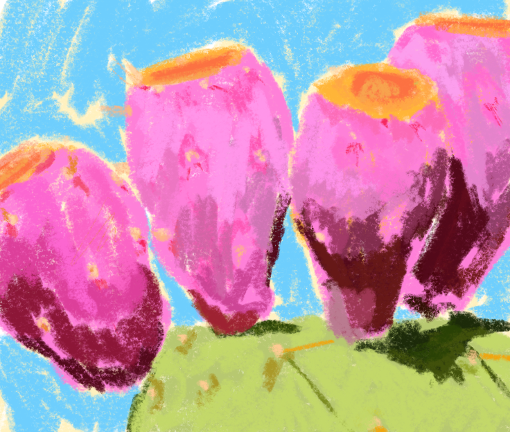
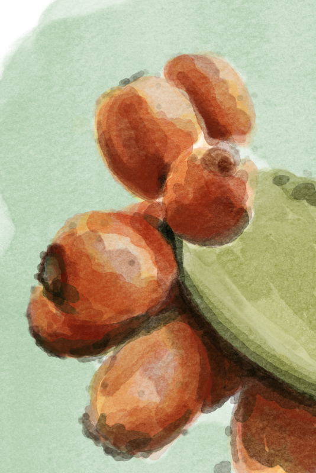

The Israeli Cactus
contact Me


In a scientific illustration course, we were given an assignment: choose a plant and research it. I chose the sabra. I feel like the most Israeli person in the world, Israel is the only home I have, but I don't get the title "tzabar", because I was born in America and came to Israel at the age of three. Early in my research I discovered that the sabra itself came from America. That's where the project's question was born: why did an immigrant plant, of all things, become the symbol of the rooted Israeli, and what actually makes someone a tzabar?
I researched the sabra both biologically and culturally. The sabra spreads quickly, puts down deep roots, grows upward, reproduces easily, and survives a harsh climate with little water. The more I learned about it, the more I understood that these traits describe the Israeli very precisely, just not the way we usually think. A tzabar isn't necessarily someone who was born here. A tzabar is someone who puts down roots here and survives the hardship. And suddenly I understood that I, of all people, am the most tzabar in the world.
Every design decision was meant to tell the same story. I chose the David font, because its shapes recall the cactus: a little spiky and a little rounded, large and impressive. I created the illustrations in colored pencil on a black background. The vivid color stands out, and the pencil gives a slightly dry feel, so hardship and vitality meet. Before that I tried other techniques: watercolor was too romantic and pastoral for a story of toil and hardship, pen was too clean and simple, and chalk was too dry and forced.



The final product is a booklet, not a bound book and not a poster, because I wanted a personal and intimate experience in which the reader moves forward slowly, page after page. The lecturer gave the project an award-worthy grade, but the readers' responses moved me most of all. Some said they reached the end with goosebumps, some identified with it, and some thought of their grandparents, who always felt like immigrants even though they were the truest tzabarim there are. If I did the project again, I would break the tidy grid of the illustrations a little and let them step outside the lines. That way they would be strong, less apologetic and less obedient, exactly like the sabra.